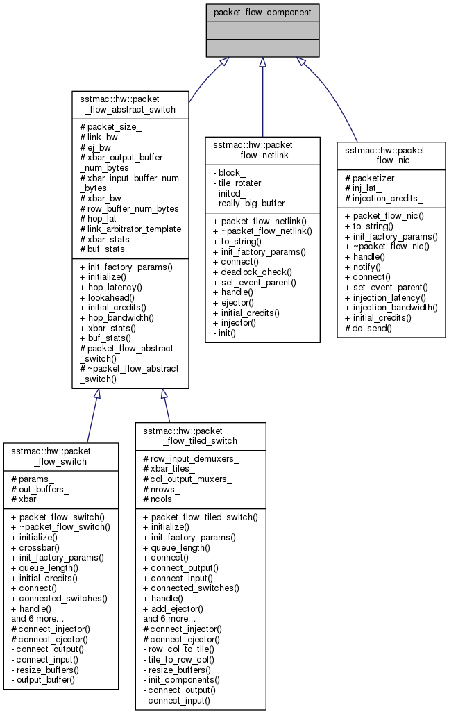

SST/macro
Main Page
Related Pages
Namespaces
Classes
Files
Class List
Class Index
Class Hierarchy
Class Members
packet_flow_component Class Reference
Inheritance diagram for packet_flow_component:

Collaboration diagram for packet_flow_component:
The documentation for this class was generated from the following file:
sstmac/hardware/packet_flow/
packet_flow_switch.h
Generated by
1.8.11
 1.8.11
1.8.11